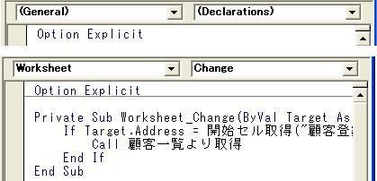

第9回.イベントを使ってマクロを起動させる
エクセルで顧客管理を作ります、
前回までで、「顧客一覧」から、「顧客登録」のシートを作成し、
「顧客登録」の「顧客番号」で、「顧客一覧」よりデータの取得まで出来ました。
しかし、手動でマクロを起動したのでは、面倒ですよね。
手っ取り早いのは、フォームコントロールのボタンを付けて、それにマクロを割り当てます。
これは、今後必ずでてきますので、その時に説明します。
今回は、イベントとファンクションキーでマクロを起動させます。
シート「顧客登録」のシートモジュールを表示します。
シートモジュールの表示方法
１．VBEで、シート「顧客登録」を選択します。
２．ダブルクリック、「表示」→「コード」、F7のいずれか
ここに以下のコードを貼り付けて下さい。
Private Sub Worksheet_Change(ByVal Target As Range)
If
Target.Address = 開始セル取得("顧客登録").Offset(0, 1).Address Then
Call
顧客一覧より取得
End If
End Sub
↓貼り付け前

↑貼り付け後
このようになったはずです。
左（Generalｓ等）は、オブシェクトのプルダウンです。
右（Declarations）は、プロシージャーですが、ここではイベントのプルダウンになっています。
つまり、WorksheetオブジェクトにChangeイベントのプロシージャーを作成した事になります。
右のプロシージャーのプルダウンからイベントを選択すると、自動でそのプロシージャーが作成されます。
Private Sub Worksheet_Change(ByVal Target As Range)
これは、シート内のセルの値に変更があった時に起動されるイベントです。
また、Privateになっていますので、他のモジュールからは参照できません。
シートモジュールにおいても、Publicは使用可能ですが、
かなり特殊な場合を除いて使用するべきではありません。
Targetには、変更されたセル範囲が渡されてきます。
If Target.Address = 開始セル取得("顧客登録").Offset(0, 1).Address
開始セル取得("顧客登録)は、「顧客番号」の見出しセルですので、
開始セル取得("顧客登録").Offset(0, 1)は、右横の顧客番号の入力セルになります。
つまり、変更されたセルが、顧客番号の入力セルの場合に処理するようにしています。
これで、顧客番号を入力すると、自動的に、モジュール「顧客一覧より取得」が起動されます。
顧客番号を入力して見て下さい。
どうです、データが表示されましたよね。
では、「顧客一覧」で選択した行の顧客データを、「顧客登録」に表示させる方法を考えましょう。
この場合は、イベントを使うのは難しいです。
難しいというより、かえって使いづらくなってしまいます。
そこで、行を選択後、使い手に何らかのアクションをしてもらうことになります。
前述のように、ボタンでもよいのですが、マウスをあっちへこっちへとなってしまうので、ちょっと使いづらくなってしまいます。
各行に小さいボタンを自動作成したりと、いろいろ方法はありますが、今回はファンクションを使ってみましょう。
どのファンクションでもよいのですが、あまり使用しないもので、F1にしましょう。
ヘルプがみたければ、マウスを使っても問題無いでしょう。
ブックモジュールを表示します。
１．VBEで、「ThisWorkbook」を選択します。
２．ダブルクリック、「表示」→「コード」、F7のいずれか
ここに以下のコードを貼り付けて下さい。
Private Sub Workbook_Open()
Application.OnKey "{F1}",
"ファンクションF1"
End Sub
Private Sub Workbook_Open()
これは、ブックを開いた時に起動されるイベントです。
Application.OnKey "{F1}",
"ファンクションF1"
これは、「F1」を押した時に、「ファンクションF1」というモジュールを起動します。
次に、モジュール「Mod共通」に、以下のコードを貼り付けて下さい。
Sub ファンクションF1()
Dim strWork As String
Select Case True
Case ActiveSheet Is
シート取得("顧客一覧")
If Not IsEmpty(Cells(ActiveCell.Row,
開始セル取得("顧客一覧").Column)) And _
ActiveCell.Row > 開始セル取得("顧客一覧").Row
Then
strWork = Cells(ActiveCell.Row,
開始セル取得("顧客一覧").Column)
Call
顧客登録シート作成
開始セル取得("顧客登録").Offset(0, 1) = strWork
Call
顧客一覧より取得
End If
End Select
End
Sub
Case ActiveSheet Is シート取得("顧客一覧")
現在のシートが「顧客一覧」の場合のみ処理するように判定しています。
この時点では、他シートの処理が存在しないので、Ifでも良さそうですが、
今後、増える可能性が多いので、あえて、Select Caseを使用しています。
このようなコーディングが保守性を高めます。
If Not IsEmpty(Cells(ActiveCell.Row, 開始セル取得("顧客一覧").Column)) And
_
ActiveCell.Row > 開始セル取得("顧客一覧").Row Then
ActiveCell.Rowは現在選択されている行です。
開始セル取得("顧客一覧").Column)、顧客番号の列になります。
従って、選択行の顧客番号が空白では無い時に処理するようにしています。
ActiveCell.Row > 開始セル取得("顧客一覧").Row
は、見出し行より下の場合のみ処理するための判定です。
strWork = Cells(ActiveCell.Row,
開始セル取得("顧客一覧").Column)
顧客番号を変数に保存
Call 顧客登録シート作成
シート「顧客登録」を作成
開始セル取得("顧客登録").Offset(0, 1) = strWork
変数に保存した顧客番号を、「顧客登録」に設定
Call
顧客一覧より取得
「顧客一覧」より、顧客データを取得
以上で、完了です。
「顧客一覧」で、適当な行の適当なセルを選択し、「F1」を押してみて下さい。
どうでしょうか？
「顧客登録」が表示され、選択行の顧客データが表示されたはずです。
なんとなく、プログラムっぽくなってきましたね。
さすがに、ここまでのコードを全部貼り付けた人はいないと思いますので、
今回の復習
シートモジュール
ブックモジュール
Application.OnKey
同じテーマ「エクセル顧客管理」の記事
第6回.ここまでの復習
第7回.本格的なプログラムへ
第8回.顧客一覧より顧客データを取得
第9回.イベントを使ってマクロを起動させる
第10回.コーディングとデバッグ
第11回.顧客登録より顧客一覧へ更新
第12回.最終行の判定、Rangeオブジェクトと配列、高速化の為に
第13回.コントロールのボタンを配置
第14回.オブジェクトとプロパティの真実（GW特別号No1）
第15回.記述による処理速度の違い（GW特別号No2）
第16回.処理速度の向上はどこまでやれば良い（GW特別号No3）
新着記事NEW ・・・新着記事一覧を見る
VBA100本ノック 100本目：WEBから100本ノックのリストを取得｜VBA練習問題（3月3日）
VBA100本ノック 99本目：自動席替え（行列と前後左右が全て違うように）｜VBA練習問題（3月2日）
VBA100本ノック 98本目：席替えルールが守られているか確認｜VBA練習問題（3月1日）
VBA100本ノック 97本目：Accessデータを取得（グループ集計）｜VBA練習問題（2月27日）
VBA100本ノック 96本目：Accessデータを取得（マスタ結合&抽出）｜VBA練習問題（2月26日）
VBA100本ノック 95本目：図形のテキストを検索するフォーム作成｜VBA練習問題（2月24日）
VBA100本ノック 94本目：表範囲からHTMLのtableタグを作成｜VBA練習問題（2月23日）
VBA100本ノック 93本目：複数ブックを連結して再分割｜VBA練習問題（2月22日）
VBA100本ノック 92本目：セルの色を16進で返す関数｜VBA練習問題（2月20日）
VBA100本ノック 91本目：時間計算（残業時間の月間合計）｜VBA練習問題（2月19日）
アクセスランキング ・・・ ランキング一覧を見る
1.最終行の取得（End,Rows.Count）｜VBA入門
2.RangeとCellsの使い方｜VBA入門
3.変数宣言のDimとデータ型｜VBA入門
4.マクロって何？VBAって何？｜VBA入門
5.Range以外の指定方法（Cells,Rows,Columns）｜VBA入門
6.セルのコピー&値の貼り付け（PasteSpecial）｜VBA入門
7.繰り返し処理（For Next)｜VBA入門
8.セルに文字を入れるとは（Range,Value）｜VBA入門
9.マクロはどこに書くの（VBEの起動）｜VBA入門
10.とにかく書いてみよう（Sub,End Sub）｜VBA入門
このサイトがお役に立ちましたら「シェア」「Bookmark」をお願いいたします。
記述には細心の注意をしたつもりですが、
間違いやご指摘がありましたら、「お問い合わせ」からお知らせいただけると幸いです。
掲載のVBAコードは動作を保証するものではなく、あくまでVBA学習のサンプルとして掲載しています。
掲載のVBAコードは自己責任でご使用ください。万一データ破損等の損害が発生しても責任は負いません。